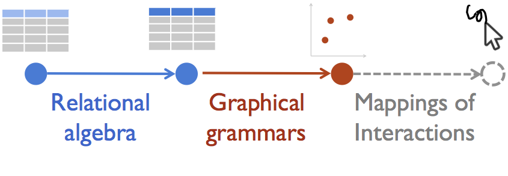

Data Visualization
Management Systems
A top to bottom rethinking of data-driven interactive visualization system and language design.
Overview
Most visualizations today are produced by retrieving data from a database and using a specialized visualization tool to render it. This decoupled approach results in significant duplication of functionality, such as aggregation and filters, and misses tremendous opportunities for cross-layer optimizations. Furthermore, existing callback-based interactive visualization programming is difficult to write, and impossible to manage and debug.
The Data Visualization Management System, or DVMS, is based on a declarative visualization language that fully compiles the end-to-end visualization pipeline into a set of declarative, relational algebra-like queries. The DVMS logically manages the entire visualizations process, from data processing to the pixels presented to the user, within a single data model. This allows DVMS to be both expressive via the visualization language, performant by leveraging traditional and visualization-specific optimizations to scale interactive visualizations to massive datasets, and maintainable by enabling more powerful analysis tools.
Mappings of Interactions

Mappings of Interactions is a declarative approach to interaction specification realized through a language called DDI. DDI is intended to radically simplify the specification of interactive visualizations, enabling much more widespread use of interactive features. The dynamics of interaction introduce unique technical challenges and opportu- nities, including debugging and testing of asynchronous interaction handlers, and design tradeoffs between scaling up data and maintaining interface responsiveness. We hypothesize that the Mappings of Interactions can make these classes of challenges much more tractable, and that DDI can engage visualization designers in widespread, creative development of new interactive visualizations.
Perceptually Accurate Interactive Visualizations
An often overlooked element of the interactive data visualization stack is the human in the loop. While computational and data processing capabilities have increased over time, human limits have remained constant. In this light, we describe extensions to client-server database-driven visualization systems that are both customized to interactive workloads, and support perceptual models that approximate the human's ability to decode visually encoded information. We recognize and accommodate human perceptual limitations through the use of perceptual functions, or PFunk as a way to minimize computation, network and rendering costs, and support high frame-rate interactions.
Based on these models, we seek to answer a critical question: how can these models inform approximation decisions that improve end-to-end visualization performance?